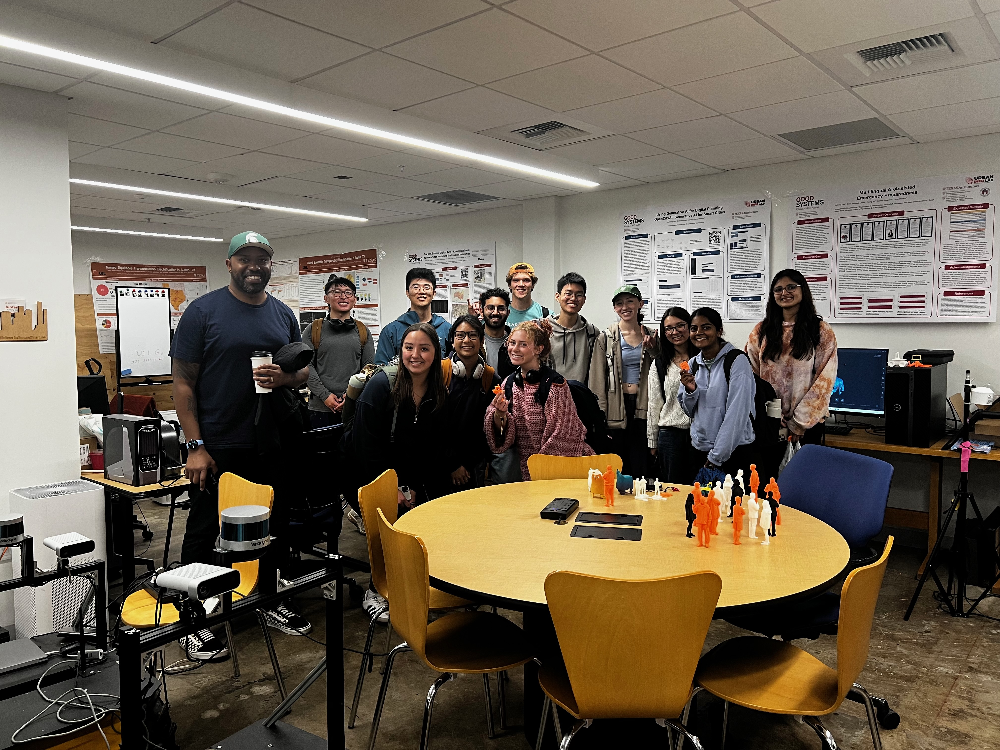

"The function of education is to teach one to think intensively and to think critically. Intelligence plus character — that is the goal of true education."
— Martin Luther King, Jr.
{% include base_path %}
{% for post in site.teaching reversed %}
{% include archive-single.html %}
{% endfor %}

LA 329 Global Learning Seminar Class, Spring 2024